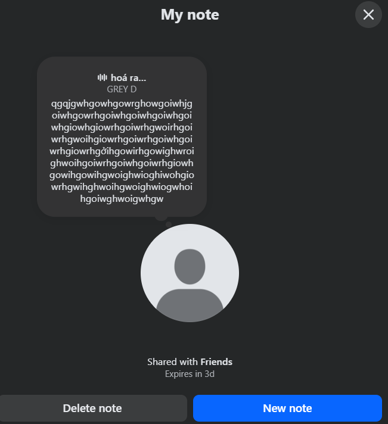

📥 Tải Extension
Tải xuống FB-Note-Breaker.zipNhấn vào nút để tải file extension về máy tính của bạn.
✨ Tính năng mới
- Nhạc trực tiếp: Có thể phát/preview nhạc ngay từ kết quả tìm kiếm
- Giao diện mới: Thêm nút phát/tạm dừng/lưu, thanh cuộn đẹp hơn, chọn nhạc dễ hơn
- Giới hạn nội dung: Nội dung ghi chú tối đa 600 ký tự (tương thích tốt hơn với Facebook)
- Sửa lỗi & mượt hơn: Trải nghiệm chọn nhạc, bạn bè, xử lý lỗi tốt hơn
🎯 Tính năng chính
- Vượt giới hạn 60 ký tự: Viết ghi chú dài tới 600 ký tự (giới hạn API Facebook cho note có nhạc)
- Thời hạn tuỳ chỉnh: Chọn thời gian hiển thị từ 1 giờ đến 8 ngày, hoặc nhập số phút tuỳ ý
- Chọn đối tượng: Công khai, bạn bè, danh bạ, hoặc tuỳ chỉnh danh sách bạn bè
- Đính kèm & cắt nhạc: Thêm bài hát, chọn đoạn 30s, nghe thử trước khi chia sẻ
- Giao diện tối: Thiết kế tối giản, dễ nhìn
- Đa ngôn ngữ: Hỗ trợ Tiếng Việt và English
Extension này chỉ hoạt động trên trình duyệt Chrome, Edge, Brave và các trình duyệt dựa trên Chromium. Không hỗ trợ Firefox.
📋 Hướng dẫn cài đặt
Tải file extension
Nhấn vào nút "Tải xuống FB-Note-Breaker.zip" ở trên để tải file extension về máy tính của bạn.
Giải nén file ZIP
Sau khi tải xong, nhấn chuột phải vào file FB-Note-Breaker.zip và chọn "Extract All..." / "Giải nén tất cả...". Bạn sẽ thấy thư mục FB-Note-Breaker chứa các file extension.
Mở trang Extensions trong Chrome
Mở trình duyệt Chrome/Edge, gõ chrome://extensions vào thanh địa chỉ và nhấn Enter. Hoặc vào menu ⋮ → Extensions / Tiện ích mở rộng → Manage Extensions / Quản lý tiện ích mở rộng.
Bật chế độ Developer Mode
Ở góc trên bên phải của trang Extensions, bật công tắc "Developer mode" / "Chế độ nhà phát triển".
Load extension
Nhấn vào nút "Load unpacked" / "Tải tiện ích đã giải nén". Chọn thư mục FB-Note-Breaker mà bạn đã giải nén ở Bước 2 (thư mục chứa file manifest.json).
Hoàn tất!
Extension Facebook Note Breaker đã được cài đặt thành công! Bạn sẽ thấy icon của extension xuất hiện trên thanh công cụ. Truy cập Facebook và bắt đầu sử dụng ngay!
🎥 Video hướng dẫn chi tiết
📸 Ảnh demo

Sau khi cài đặt, ghim extension vào thanh công cụ để dễ dàng truy cập. Nhấn vào icon extension khi đang ở Facebook để bắt đầu viết ghi chú dài không giới hạn!